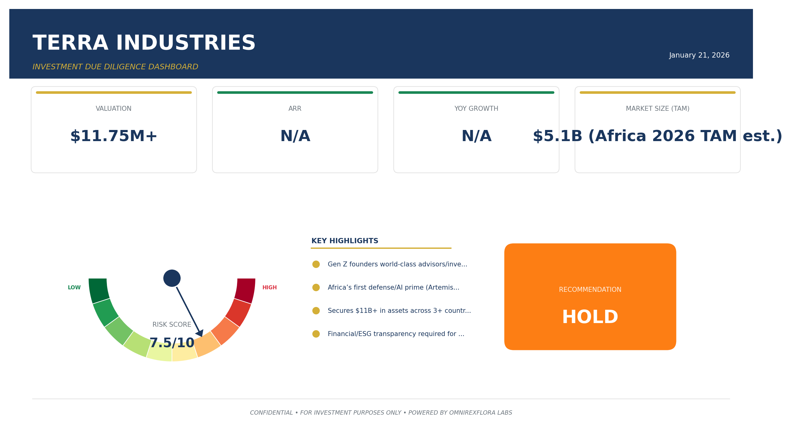
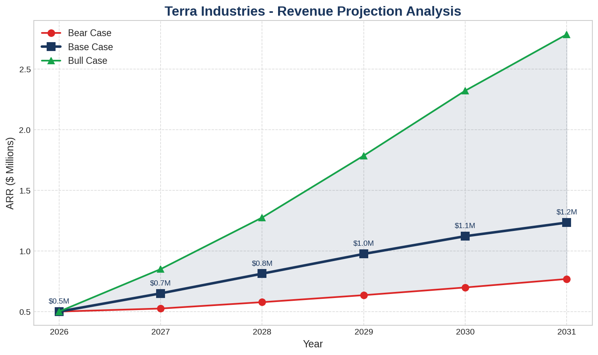

Executive Summary

Executive Summary:
Terra Industries is Africa’s first homegrown defense/AI prime
founded by Gen Z entrepreneurs and backed by global investors. The company has strong market positioning
a world-class team
and proprietary technology (ArtemisOS). However
there is a critical lack of public financial and ESG/impact disclosures. We recommend funding conditional on provision of detailed financial and impact data.
Overall Confidence: 66% (high in team
market
competitive; low in financial/ESG).
Recommendation: CONDITIONAL (pending financial/ESG transparency).
Financial Projections

Company Overview
Founded in 2024 in Nigeria
Terra Industries designs and manufactures autonomous defense systems (drones
sentry towers
UGVs
maritime surveillance) powered by ArtemisOS. The company is led by CEO Nathan Nwachuku and CTO Maxwell Maduka
both under 25
with a team of 30+ including ex-military engineers and global advisors.
Market Opportunity
African defense/autonomous security TAM is ~$5.1B (2026)
with strong growth from insecurity
industrialization
and government procurement. Terra is a first-mover in a high-growth
under-served market.
Financial Analysis
No public financials available. $11.75M funding raised
commercial traction reported
but no detailed revenue
burn
or margin data. Confidence: 10%.
Team Assessment
Exceptional Gen Z founders with deep tech
military
and entrepreneurial backgrounds. Rapid scaling
strong advisory board
and global investor backing. Confidence: 95%.
Competitive Landscape
Competes with Anduril
Zipline
Paramount
Baykar
and local firms. Terra’s advantage: proprietary AI
local partnerships
and African focus. Confidence: 90%.
Risk Assessment
High FX
regulatory
and political risks in Nigeria/East Africa; moderate in Ghana/Kenya. Mitigations possible but require active management. Confidence: 75-85%.
Impact & ESG
No direct ESG/SDG disclosures. Likely job creation and STEM impact
but gender/youth and environmental data are missing. Confidence: 40%.
Recommendation
CONDITIONAL: High-potential African defense tech leader
but financial and ESG transparency required before FUND decision. Request full financials and ESG/impact report for upgrade.